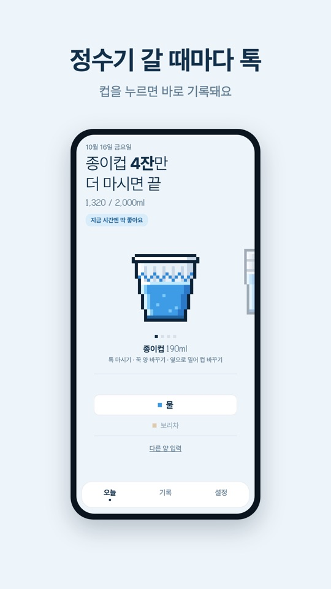

하루 물 2L는 종이컵 몇 잔?
종이컵 190ml로 세면 약 10잔 반이에요.
"하루 물 2리터"라는 말은 많이 듣지만, 2리터가 얼마큼인지는 잘 와닿지 않아요. 사무실 정수기 옆 종이컵으로 바꿔 보면 쉬워요.
종이컵 한 잔은 몇 ml?
흔히 쓰는 자판기·정수기 종이컵은 6.5온스(약 190ml)짜리가 많아요. 가득 채우면 190ml쯤이고, 보통은 살짝 덜 채워 마셔요. 이 글은 190ml로 셌어요.
양마다 몇 잔인지 한눈에
| 하루 양 | 종이컵 190ml | 텀블러 350ml | 생수 500ml |
|---|---|---|---|
| 1L | 약 5잔 | 약 3잔 | 2병 |
| 1.5L | 약 8잔 | 약 4잔 | 3병 |
| 2L | 약 10잔 반 | 약 6잔 | 4병 |
| 2.5L | 약 13잔 | 약 7잔 | 5병 |
반올림한 값이에요. 2,000 ÷ 190 = 10.5
2L를 전부 물로 마셔야 할까?
꼭 그렇지는 않아요. '2020 한국인 영양소 섭취기준'(한국영양학회)의 수분 기준은 음식에 든 수분과 마시는 물·음료를 합친 양이에요. 예를 들어 25세 남성은 평소 식사로 약 1,400ml를 얻으니, 물과 음료로 약 1,200ml를 더 마시면 된다고 설명해요. 종이컵으로 6~7잔쯤이에요.
필요한 양은 나이, 몸집, 날씨, 움직이는 정도에 따라 달라요. 숫자는 대략의 기준으로만 보고, 병이 있거나 물 마시는 양을 조절해야 한다면 의사와 상의하세요.
잔으로 세면 덜 헷갈려요
"오늘 몇 ml 마셨지?"보다 "종이컵 몇 잔 마셨지?"가 훨씬 기억하기 쉬워요. 정수기에 갈 때마다 한 잔씩 세어 보세요.
